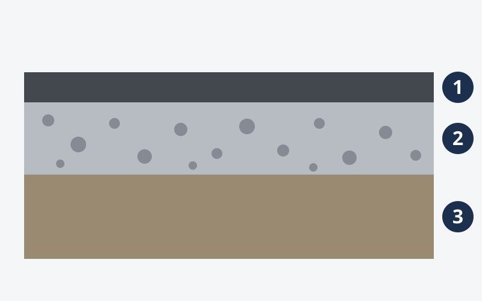
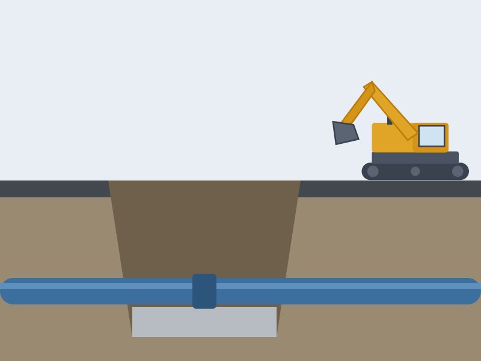

創業以来の事業
砕石の生産・販売
明治42年の創業以来続けてきた事業です。砕石各種の生産と販売を行っています。
採取から出荷までの工程・製品の種類は、企業確認後に写真とあわせて掲載予定です。
北海道厚岸町門静｜明治42年創業
田崎土建は、北海道厚岸町門静で砕石の生産・販売、土木・管・水道施設・解体などの工事、産業廃棄物の中間処理・収集運搬を営む会社です。
求人掲載情報：土木作業員・重機オペレーター（正社員）
道路・上下水道・解体工事の現場作業。冬期間は除雪車の運転業務。
現在の募集状況は企業確認中です。ハローワーク求人（求人番号 01090-05949761、2026年9月1日受理・11月30日有効期限）を、民間の求人情報サイトの転載ページ（ハローワークJOB、新しいタブで開きます）で確認した内容です。
会社について
田崎土建株式会社は、明治42年（1909年）7月の創業以来、砕石の販売を行ってきました。昭和57年（1982年）に建設業の許可を受け、土木工事も営んでいます。
現在は砕石各種の生産・販売に加え、土木・とび・土工・管・水道施設・解体などの工事、産業廃棄物の中間処理・収集運搬を手がけています。材料となる砕石と、それを使う工事の両方に関わっていることが、この会社の仕事の特徴です。
出典：ハローワーク求人の事業所情報（民間の求人情報サイト「ハローワークJOB」の転載ページ（新しいタブで開きます）で確認。ハローワーク公式サイトではありません）。所在地・電話番号・FAXは、厚岸建設業協会の協会員一覧（新しいタブで開きます）の掲載と照合しました。
事業紹介
確認できている事業を、ひとつずつご紹介します。
砕石（さいせき）は、岩石を砕いて大きさをそろえた石の材料です。一般的に、道路の舗装の下に敷く層や、コンクリートの材料などに使われます。
上の図と説明は、砕石の一般的な使われ方です。田崎土建で生産している砕石の種類・規格・主な用途は、企業確認後に掲載します。

創業以来の事業
明治42年の創業以来続けてきた事業です。砕石各種の生産と販売を行っています。
採取から出荷までの工程・製品の種類は、企業確認後に写真とあわせて掲載予定です。
建設業
昭和57年に建設業の許可を受け、土木工事を営んでいます。求人では、道路工事の現場での土木作業が仕事内容として挙げられています。
主な施工実績・発注者の区分は、企業確認後に掲載予定です。

建設業
事業内容に管工事・水道施設工事が含まれ、求人では上下水道工事の現場作業が仕事内容に挙げられています。地中の水道管・下水道管にかかわる工事です。
建設業
事業内容に解体工事が含まれ、求人でも解体工事の現場作業が仕事内容に挙げられています。
対象となる建物の種類などは、企業確認後に掲載予定です。
環境
産業廃棄物の中間処理と収集運搬を行っています。
取り扱う品目・処理の方法・許可の内容は、企業確認後に掲載予定です。
会社概要・アクセス
社屋外観の写真
写真は未提供です。企業提供の写真に差し替え予定です。
〒088-1126
北海道厚岸郡厚岸町門静2丁目8番地
来社時の駐車場の有無・受付時間は企業確認後に掲載予定です。
採用情報
ハローワーク求人（2026年9月1日受理・11月30日有効期限）に掲載された、正社員・1名（増員）・経験・学歴不問の求人をもとにご案内します。仕事の中身から、働き方、待遇、応募方法まで順に掲載しています。
現在の募集状況は企業確認中です。応募前に、ハローワークで最新の求人状況をご確認ください。
仕事内容
道路・上下水道・解体工事の現場で、土木作業に従事します。
冬期間は、除雪車の運転業務を担当します。
出典：ハローワーク求人の「仕事内容」欄（募集要項に出典を記載）。季節ごとの仕事の割合、担当する現場の範囲、出張の有無、除雪の時間帯は企業確認後に掲載します。
入社直後に任せる仕事
企業確認後に掲載予定
経験を積んだ後の仕事
企業確認後に掲載予定
チーム体制
現場ごとの人数・組み方は企業確認後に掲載予定
求人で確認できている勤務時間だけを掲載しています。途中の作業や移動の流れは、企業に確認してから掲載します。
始業
午前・午後の作業、移動、休憩
休憩は合計90分（時間帯は企業確認後に掲載予定）。作業内容・移動・引き継ぎの流れは企業確認後に掲載予定です。
終業
残業は月平均16時間（求人掲載）。
入社後に仕事を覚える流れ
求人では、資格の無い方も入社後に各資格を取得することが可能とされ、資格取得支援制度ありと記載されています。車両系建設機械の運転技能者の資格は「あれば尚可」で、応募時の必須条件ではありません。
企業確認後に掲載予定の内容
社員・職場紹介
企業全体の従業員は15人、そのうち今回の就業場所の従業員は5人です（求人掲載時点）。
現場で働く様子の写真
写真は未提供です。掲載許可を得た写真に差し替え予定です。
企業確認後に掲載予定の内容
給与・休日・福利厚生
ハローワーク求人（2026年9月1日受理）の掲載内容です（出典は募集要項に記載）。最新の条件は企業確認後に更新します。
月給（合計）
220,500円〜315,000円
| 基本給 | 200,000円〜250,000円 |
|---|---|
| 免許手当 | 500円〜15,000円保有資格により会社規定に基づき支給 |
| 固定残業代 | 20,000円〜50,000円時間外労働の有無にかかわらず固定残業代として支給。12時間〜23時間を超える時間外労働は追加で支給金額と対象時間（12時間〜23時間）の対応は企業確認中です。 |
賃金締切日：月末／支払日：翌月10日。各金額の幅がどのように決まるか（経験・資格など）は企業確認後に掲載予定です。
退職金制度は、求人の詳細欄では「なし」と記載されています（同じページの紹介欄の表記と異なるため、企業確認中）。
回答は、ハローワーク求人の掲載内容から確認できたものです（出典は募集要項に記載）。
求人では、必要な経験・学歴ともに「不問」とされています。
車両系建設機械（整地・運搬・積込用及び掘削用）運転技能者の資格は「あれば尚可」で、必須ではありません。資格の無い方は入社後に各資格を取得することも可能で、資格取得支援制度があると記載されています。
64歳以下です（定年が65歳のため）。
マイカー通勤が可能で、無料駐車場があります。通勤手当は実費支給（上限なし）と記載されており、詳細は面接時に説明するとされています。最寄りの門静駅からは徒歩6分です。
転勤はありません。
冬期間は除雪車の運転業務を担当します。除雪の時間帯・範囲は企業確認後に掲載予定です。
3か月の試用期間があり、期間中の労働条件は本採用と同じです。
求人では、ハローワークからの事前連絡の後に応募書類（紹介状・写真を貼った履歴書）を郵送し、書類選考を経て、後日、結果と面接日が連絡されるとされています。面接は予定1回で、面接の結果は5日以内に通知されます。詳しくは応募の流れをご覧ください。
現在の募集状況は企業確認中です。
出典：ハローワーク求人 求人番号 01090-05949761（釧路公共職業安定所 受理）／受理日 2026年9月1日・有効期限 2026年11月30日。
2026年10月2日に、民間の求人情報サイト「ハローワークJOB」の転載ページ（新しいタブで開きます）で確認しました（ハローワーク公式サイトではありません）。
求人で確認できている応募方法は、ハローワークを通した応募です。現在の募集状況は企業確認中のため、応募前にハローワークで最新の求人状況をご確認ください。
ハローワークで紹介を受ける
求人番号 01090-05949761 を窓口でお伝えください。紹介状が発行されます。
ハローワークからの事前連絡
求人には「ハローワークからの事前連絡後、応募書類を郵送」と記載されています。
応募書類を郵送
紹介状と、写真を貼った履歴書を郵送します。
書類選考・結果と面接日の連絡
書類選考の後、後日、結果と面接日が連絡されます。
面接（予定1回）
場所：本社（厚岸町門静2丁目8番地）
面接結果の通知
面接の結果は5日以内に通知されます。
出典：求人の転載ページ（ハローワークJOB）（新しいタブで開きます）の「選考方法」「応募書類等」の欄。Webからの応募受付・会社見学・応募前の相談に対応しているかは企業確認中です。対応が確認できた場合に、ここに入口を掲載します。
このフォームはデモです。実際の応募は受け付けていません。
入力内容はどこにも送信・保存されません。
電話0153-52-3422
FAX0153-52-3950
受付時間は企業確認後に掲載予定です。電話・FAXは厚岸建設業協会の協会員一覧（新しいタブで開きます）の掲載と照合しています。
ハローワーク求人の採用担当者連絡先として、上記の電話番号とメールアドレス（tazakidoken@gmail.com）が掲載されています。
このサイトで掲載する採用窓口は企業確認後に確定します。出典：求人の転載ページ（ハローワークJOB）（新しいタブで開きます）
※提案用デモのため、電話番号・メールアドレスはリンクにしていません。